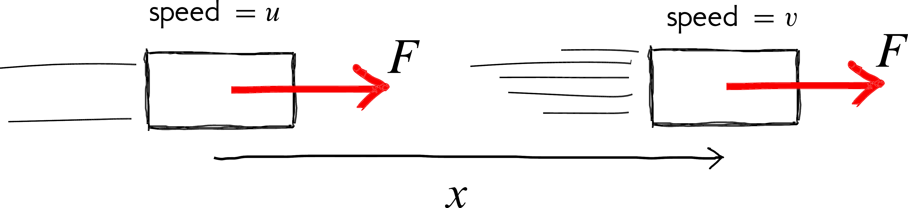

2 Now I know my A, B, Cs
Figure 2.1: From xkcd
](my-figures/xkcd_fundamental_forces.png)
… I
a universe of atoms
an atom in the universe.’
‘The greatest enemy of knowledge is not ignorance, it is the illusion of knowledge’
2.1 What we have in store for you
This chapter is devoted to fundamentals.
We will introduce some new ideas and strengthen the ones we already know. We will use these ideas in the rest of the course for our journey from atoms to molecules.
We often have difficulty understanding certain concepts because the technical terms are also used in everyday life albeit with less precise meanings.
Figure 2.2: ABCs for A2M
2.2 Vectors & scalars
\[ \require{color} \definecolor{xx}{rgb}{.95,.95,.95} \definecolor{myBrown}{RGB}{205,102,0} \definecolor{myBrown}{RGB}{205,102,0} \definecolor{darkred}{rgb}{.5,0,0} \definecolor{myBlue}{rgb}{0,0,.5} \definecolor{myRed}{rgb}{.5,0,0} \definecolor{myGreen}{rgb}{0,.5,0} \newcommand{\mathHigh}[2][xx]{\colorbox{xx}{$\displaystyle {#2}$}} %\newcommand{\mathHigh}[2][]{#2} \newcommand{\textcolor}[2]{#2} \newcommand{\v}[1]{\vec{#1_{}}} \newcommand{\mnote}[1]{\quad\quad(\text{#1})} \newcommand\mdescrip[1]{} \newcommand\unit[1]{\;#1} \newcommand\emph[1]{\textit{#1}} \newcommand\there{\therefore\quad\quad} % \def\ke{\dfrac{1}{4 \pi \epsilon_{0}}} \def\ke{k_{C}} \def\kC{\dfrac{1}{4 \pi \epsilon_0}} \newcommand\lr[1]{\left({#1}\right)} \def\l{\left} \def\r{\right} % % \newcommand{\ex}[1]{\left\langle {#1}\right\rangle} \newcommand\da[2]{\dfrac{d #1}{d #2}} \newcommand\daa[2]{\dfrac{d^2 #1}{d #2^2}} \newcommand\pa[2]{\dfrac{\partial #1}{\partial #2}} \newcommand\paa[2]{\dfrac{\partial^2 #1}{\partial #2^2}} \newcommand\ie{\text{i.e.$\quad$}} % % % \def\br{\\[.85em]} % \def\hb{\hslash} \] \[ \def\b{\color{myBlue}} \def\g{\color{myGreen}} \def\st{\\} % \newcommand{\tc}[1]{{\g #1_{i}}{\b #1_{j}}} \newcommand{\td}[1]{{\g #1_{i}^{*}}{\b #1_{j}}} % \def\h{{\color{myBrown}{\hat{H}}}} \renewcommand{\e}[1]{{\color{myPurple}E_{#1}}} % \newcommand{\t}[1]{c_{#1} \psi_{#1}} \renewcommand{\tt}[1]{c_{#1}\h \psi_{#1}} \newcommand{\ttt}[1]{c_{#1}\e{#1} \psi_{#1}} \newcommand{\tttt}[1]{\e{#1}\color{black} |c_{#1}|^{2}{\color{myGreen}\underbrace{\int|\psi_{#1}|^{2} dx}_{1}}} \newcommand{\ttttf}[1]{\color{black} |c_{#1}|^{2}\int{\color{myGreen}\underbrace{|\psi_{#1}|^{2} dx}_{1}}} % \newcommand{\tabcde}[2]{\e{#2} \,c_{#1}^{*} {\color{myBlue}c_{#2}}{\color{myRed}\underbrace{\int\psi_{#1}^{*}{\color{myBlue}\psi_{#2}}dx}_{0}}} \newcommand{\tabcdef}[2]{c_{#1}^{*} {\color{myBlue}c_{#2}}{\color{myRed}\underbrace{\int \psi_{#1}{\color{myBlue}\psi_{#2}}dx}_{0}}} % \newcommand{\abc}[1]{\e{#1}|c_{#1}|^{2}} \newcommand{\abcd}[1]{|c_{#1}|^{2}} % % \def\bra{(\t{1}+\t{2}+\t{3}\ldots\t{n})} \def\braa{(\tt{1}+\tt{2}+\tt{3}\ldots\tt{n})} \def\braaa{(\ttt{1}+\ttt{2}+\ttt{3}\ldots\ttt{n})} \def\brabcd{\tttt{1}+\tttt{2}+\tttt{3}\ldots\mathHigh{\tttt{n}} } \def\brabcde{\tabcde{1}{2}+\tabcde{2}{1}+\tabcde{3}{1}\ldots\mathHigh{\tabcde{n}{m}} } % \def\brabcdf{\ttttf{1}+\ttttf{2}+\ttttf{3}\ldots\mathHigh{\ttttf{n}} } \def\brabcdef{\tabcdef{1}{2}+\tabcdef{2}{1}+\tabcdef{3}{1}\ldots\mathHigh{\tabcdef{n}{m}} } % \def\ABC{\abc{1}+\abc{2}+\abc{3}\ldots\abc{n}} % \def\ABCD{\abcd{1}+\abcd{2}+\abcd{3}\ldots\abcd{n}} \]
 Figure 2.3: A vector has a size and a direction.
Figure 2.3: A vector has a size and a direction.
We can categorise quantities (e.g. temperature, force, energy, distance ) as being either a vector or scalar.
A scalar is ‘something’ that can completely be defined by just a number(i.e. a size or magnitude). Examples are mass (50 kg), temperature (-20 \(^\circ\)C), distance (100 km), height (180 cm). Scalar quantities are usually easier to use because they are just numbers.
A vector is ‘something’ that needs two things, to be completely defined. One is a number (called the magnitude or modulus), and the other is a direction. A vector quantity will not make sense without both these bits of information. Examples are a force (10 N downwards), velocity (50 km/h due north), displacement (10 m to the left).
It is usual to indicate a vector using an arrow (see figure 2.3). The length and direction of the arrow represent the magnitude and direction of the vector, respectively.
We indicate that somethig is a vector by drawing a tiny arrow over the symbol like this: \(\v{X}\). The magnitude of this vector \(\v{X}\) is usally written (without the arrow) as \(X\) or as \(|\v{X}|\)
 Figure 2.4: Two or more vectors can be added to give a single resultant vector. In this examples the resultant \(\v{R}\) produces the same effect as the combination of vectors \(\v{F}_1\) and \(\v{F}_2\).
Figure 2.4: Two or more vectors can be added to give a single resultant vector. In this examples the resultant \(\v{R}\) produces the same effect as the combination of vectors \(\v{F}_1\) and \(\v{F}_2\).
2.2.1 Components & resultant of a vector
\[ \require{color} \definecolor{xx}{rgb}{.95,.95,.95} \definecolor{myBrown}{RGB}{205,102,0} \definecolor{myBrown}{RGB}{205,102,0} \definecolor{darkred}{rgb}{.5,0,0} \definecolor{myBlue}{rgb}{0,0,.5} \definecolor{myRed}{rgb}{.5,0,0} \definecolor{myGreen}{rgb}{0,.5,0} \newcommand{\mathHigh}[2][xx]{\colorbox{xx}{$\displaystyle {#2}$}} %\newcommand{\mathHigh}[2][]{#2} \newcommand{\textcolor}[2]{#2} \newcommand{\v}[1]{\vec{#1_{}}} \newcommand{\mnote}[1]{\quad\quad(\text{#1})} \newcommand\mdescrip[1]{} \newcommand\unit[1]{\;#1} \newcommand\emph[1]{\textit{#1}} \newcommand\there{\therefore\quad\quad} % \def\ke{\dfrac{1}{4 \pi \epsilon_{0}}} \def\ke{k_{C}} \def\kC{\dfrac{1}{4 \pi \epsilon_0}} \newcommand\lr[1]{\left({#1}\right)} \def\l{\left} \def\r{\right} % % \newcommand{\ex}[1]{\left\langle {#1}\right\rangle} \newcommand\da[2]{\dfrac{d #1}{d #2}} \newcommand\daa[2]{\dfrac{d^2 #1}{d #2^2}} \newcommand\pa[2]{\dfrac{\partial #1}{\partial #2}} \newcommand\paa[2]{\dfrac{\partial^2 #1}{\partial #2^2}} \newcommand\ie{\text{i.e.$\quad$}} % % % \def\br{\\[.85em]} % \def\hb{\hslash} \] \[ \def\b{\color{myBlue}} \def\g{\color{myGreen}} \def\st{\\} % \newcommand{\tc}[1]{{\g #1_{i}}{\b #1_{j}}} \newcommand{\td}[1]{{\g #1_{i}^{*}}{\b #1_{j}}} % \def\h{{\color{myBrown}{\hat{H}}}} \renewcommand{\e}[1]{{\color{myPurple}E_{#1}}} % \newcommand{\t}[1]{c_{#1} \psi_{#1}} \renewcommand{\tt}[1]{c_{#1}\h \psi_{#1}} \newcommand{\ttt}[1]{c_{#1}\e{#1} \psi_{#1}} \newcommand{\tttt}[1]{\e{#1}\color{black} |c_{#1}|^{2}{\color{myGreen}\underbrace{\int|\psi_{#1}|^{2} dx}_{1}}} \newcommand{\ttttf}[1]{\color{black} |c_{#1}|^{2}\int{\color{myGreen}\underbrace{|\psi_{#1}|^{2} dx}_{1}}} % \newcommand{\tabcde}[2]{\e{#2} \,c_{#1}^{*} {\color{myBlue}c_{#2}}{\color{myRed}\underbrace{\int\psi_{#1}^{*}{\color{myBlue}\psi_{#2}}dx}_{0}}} \newcommand{\tabcdef}[2]{c_{#1}^{*} {\color{myBlue}c_{#2}}{\color{myRed}\underbrace{\int \psi_{#1}{\color{myBlue}\psi_{#2}}dx}_{0}}} % \newcommand{\abc}[1]{\e{#1}|c_{#1}|^{2}} \newcommand{\abcd}[1]{|c_{#1}|^{2}} % % \def\bra{(\t{1}+\t{2}+\t{3}\ldots\t{n})} \def\braa{(\tt{1}+\tt{2}+\tt{3}\ldots\tt{n})} \def\braaa{(\ttt{1}+\ttt{2}+\ttt{3}\ldots\ttt{n})} \def\brabcd{\tttt{1}+\tttt{2}+\tttt{3}\ldots\mathHigh{\tttt{n}} } \def\brabcde{\tabcde{1}{2}+\tabcde{2}{1}+\tabcde{3}{1}\ldots\mathHigh{\tabcde{n}{m}} } % \def\brabcdf{\ttttf{1}+\ttttf{2}+\ttttf{3}\ldots\mathHigh{\ttttf{n}} } \def\brabcdef{\tabcdef{1}{2}+\tabcdef{2}{1}+\tabcdef{3}{1}\ldots\mathHigh{\tabcdef{n}{m}} } % \def\ABC{\abc{1}+\abc{2}+\abc{3}\ldots\abc{n}} % \def\ABCD{\abcd{1}+\abcd{2}+\abcd{3}\ldots\abcd{n}} \]
Adding and subtracting vectors are interesting since we need to take the direction into account. Two important concepts related to vectors are resultant and components.
Resultant
As shown in figure 2.4, two vectors can be combined (added) to give one vector. This single vector is called the resultant of the two vectors and brings about the same result as the other vectors combined. The usual way to add vectors is to draw them end to end as shown. The vector completing the shape (shown in colour) in figure 2.4 is the resultant.
Components
Just as we can combine different vectors to give one vector, we can do the reverse and split one vector into many parts or components. Figure 2.5 shows three ways one vector (\(\v{F}\) shown in colour) is being split into two other vectors2 If we like we can split into many (i.e. more than two) components. This is usually not necessary..
One of the most useful ways to split is into two perpendicular directions as shown in the leftmost instance.

Figure 2.5: Three ways the same vector (shown in colour) is split into components.
Perpendicular components
 Figure 2.6: Resultant of two perpendicualr vectors.
Figure 2.6: Resultant of two perpendicualr vectors.
One of the most convenient ways to split a vector (e.g. force) is into two (or three, in 3D) perpendicular components. In such a situation we can obtain the resultant vector using Pythagoras’ theorem. For the situation shown in figure 2.6 the size and direction of the resultant is obtained as
If you have three perpendicular (\(\v{X}, \v{Y}, \v{Z}\)) components then \(R\) is given by:
\[\begin{equation} R = \sqrt{X^2 + Y^2 + Z^2} \tag{2.3} \end{equation}\]Play with vectors
You can try out all the ideas mentioned above using the following applet (from PheT).
► Question 2.1
Use the applet (Lab) to find the resultant of the set of vectors shown in the adjoining figure.

 Figure 2.7: A force is a push or a pull.
Figure 2.7: A force is a push or a pull.
 Figure 2.8: A force can change the velocity of a mass.
Figure 2.8: A force can change the velocity of a mass.
2.3 What is a force?
2.3.1 A simple definition
Definition 2.1 A force is simply a push or a pull.
A force is a vector. Therefore we need to specify both the direction and magnitude to describe it completely. As shown in figure 2.8, when a force3 What we mean here is a net or resultant force. acts on a mass it changes the velocity4 Velocity is speed with a direction (e.g. 50 Km/h due north). of the mass. I.e. a force can change the speed and direction of a mass.
The unit of force is the Newton (N)5 1 N is equivalent to the weight of a typical apple.
2.3.2 Newton’s Laws
Newton’s three laws of motion nicely summarise our understanding of forces. We already know, through everyday experience, many of the features mentioned in the laws.
For example, we know from everyday experience that more force means more acceleration6 Acceleration is tells us how velocity changes(i.e. the speed and/or direction).. We also know that more mass means less acceleration. We usually capture these ideas mathematically as
Newton’s 1st Law: An object will continue in its state of rest or uniform (unaccelerated) motion in a straight line unless acted upon by an external force.
Also note that a ‘force’ here means a resultant force.
Newton’s 2nd Law: The acceleration of an object depends on the external force and object’s mass.
Newton’s 3rd Law: When an object A exerts a force on an object B, object B exerts an equal and oppositely directed force on object A
This is Newton’s 2nd law.
Newton’s 1st law tells us what a force can do. Its says that a force changes motion of an object. This law is related to the idea of inertia. See the next section (section 2.4.1) for more details.
 Figure 2.9: Forces always occur in pairs. Note that only the forces relevant to the block are shown.
Figure 2.9: Forces always occur in pairs. Note that only the forces relevant to the block are shown.
Newton’s 3rd law tells us that all forces occur in pairs. There are always two objects involved with forces.
Take a look at figure 2.9 for an example of some action-reaction pairs.
| Force | Force | Force pair |
|---|---|---|
| Weight (\(mg\)) | On the block due to the Earth | On the Earth due to the block |
| Contact force (\(R\)) | On the table due to the block | On the block due to the table |
2.3.3 Example: Constant force on an object
Consider the situation shown in figure 2.10 where a constant force acts on a mass over a distance \(x\).
Lets first consider what our everyday experience tells us. We expect that the speed of the mass should increase. Let see if a mathematical analysis based on Newton’s laws gives a similar conclusion.
Figure 2.10: A constant force \(F\) acting on a mass over a distance \(x\).

If you are uncomfortable with calculus worry not! We will get you up to speed in the next chapter!
Starting with Newton’s 2nd law:
\[ \def\hi{\color{darkred}} \def\hii{\color{darkgreen}} \def\hiii{\color{darkblue}} \def\ie{\text{I.e.}:} \begin{aligned} F = m \mathHigh{a} &= m \mathHigh{\frac{d \hi v}{dt}}\\ %&= m \frac{d \hi v}{dt} \times\left( \dfrac {d \hii x} {dx}\right) \\ &= m \frac{d \hi v}{dx}\times\mathHigh{\dfrac {d \hii x} {dt} } \mnote{Using the chain rule: $\dfrac{dA}{dB}=\dfrac{dA}{dC}\times \dfrac{dC}{dB}$}\\ &= m \,\frac{d\hi v}{dx} \times \mathHigh{v} \\%\label{eq:vdvdx}\eqn\\ \ie \dfrac {F} {m}&=v\dfrac {dv} {dx}\\ \Rightarrow \mathHigh{\dfrac {F} {m}} \int _{0}^{x}dx &=\int _{u}^{v}vdv\\ \ie\mathHigh{a} \bigg[x \bigg] _{0}^{x}&=\left[ \dfrac {1} {2}v^{2}\right] _{u}^{v}\mnote{$a$ is constant}\\ \there ax&=\dfrac {v^{2}-u^{2}} {2} \end{aligned} \] This leads to:
Notice how this equation beautifully explains what we knew intuitively but in the concise language of mathematics. For instance, that the speed will increase if the force acts for a longer distance. Or that the speed will remain steady if there is no force (\(a=0\)).
2.4 Mass, Inertia & Momentum
2.4.1 What is Mass
Mass indicates how much matter there is in an object and is a fundamental property7 Like charge and spin. Mass also is a measure of how reluctant the object is to change its motion. More specifically, mass is an indication of how difficult it is to speed up, slow down or change the direction motion of the object. We call this property of matter (i.e. its ‘stubbornness’ to a change in motion) inertia.
Due to this reluctance, objects like to maintain whatever state of motion they are in. This means objects at rest like to stay at rest and those in motion like to continue moving (in a straight line)8 So you do not need a force to maintain motion. In everyday life it appears otherwise because of frictional forces.. This is what is stated in Newton’s 1st Law.
2.4.2 What is momentum?
 Figure 2.11: A fast light, bullet can hurt you as much as a slow massive lorry.
Figure 2.11: A fast light, bullet can hurt you as much as a slow massive lorry.
 Figure 2.12: Momentum is conserved. The total momentum before and after is the same if there are no external forces.
Figure 2.12: Momentum is conserved. The total momentum before and after is the same if there are no external forces.
We know if a moving object hits us, it can hurt us by exerting a force. We know by experience that it is the combination of mass(\(m\)) and speed(\(v\)) that will determine how much ‘hurt’ we will experience (see figure 2.11). I.e. it is the quantity \(mv\) that decides how much hurt we experience. This vector quantity \(m \vec{v}\) is called momentum and is given the symbol \(\vec{p}\).
The unit of momentum is kgm/s.
Momentum is conserved
Very importantly momentum is a conserved quantity9 Just like energy.. I.e. the total momentum of a system is constant provided there are no external forces present.
For the system shown in figure 2.12, we can write: \[ \begin{aligned} \text{momentum before} &= \text{momentum after}\\ %m_{1} \vec{u_{1}} + m_{2}\vec{u_{2}} &= m_{1}\vec{v_{1}} +m_{2}\vec{v_{2}} \end{aligned} \]
Momentum & Force
The action of a force can be described using the idea of momentum. In fact Newton defined force, as how fast momentum changes.
This is easier to understand mathematically:
This is exactly how a force is described in Newton’s second law10 Newton’s 2nd Law (using momentum): The rate of change of momentum of an object is equal to the force acting on the object and takes place in the direction of the force..
Momentum & \(KE\)
We can recast \(KE\) (see section 2.5.4) in terms of momentum:
\[\begin{equation} \text{KE} = \frac{1}{2} mv^2 = \frac{1}{2} \frac{(mv)^2}{m} = \frac{p^{2}}{2m} \tag{2.8} \end{equation}\]Example: \(\Delta \vec{p_{}}\) for a bouncing ball
 Figure 2.13: What is the change in momentum when a ball bounces off a hard wall?
Figure 2.13: What is the change in momentum when a ball bounces off a hard wall?
Consider the situation shown in figure 2.13. A ball of mass \(m\) bounces off a hard surface. There is no loss in energy so the ball bounces back at the same speed.
The change in momentum of the ball is given by: \[ %\newcommand{\v}[1]{\vec{#1_{}}} \begin{aligned} &\text{change in momentum}\\ &= \Delta \vec{p} \\ &= \vec{p_\text{after}} - \vec{p_\text{before}} \\ &= m\v{v} - m(-\v{v}) \\ &= 2m\v{v} \end{aligned} \]
If we know the time \(\Delta t\) it took for this change in momentum, we can determine the force11 This is the force on the ball due to the wall. using equation (2.7) as
2.5 Energy & Work
\[ \require{color} \definecolor{xx}{rgb}{.95,.95,.95} \definecolor{myBrown}{RGB}{205,102,0} \definecolor{myBrown}{RGB}{205,102,0} \definecolor{darkred}{rgb}{.5,0,0} \definecolor{myBlue}{rgb}{0,0,.5} \definecolor{myRed}{rgb}{.5,0,0} \definecolor{myGreen}{rgb}{0,.5,0} \newcommand{\mathHigh}[2][xx]{\colorbox{xx}{$\displaystyle {#2}$}} %\newcommand{\mathHigh}[2][]{#2} \newcommand{\textcolor}[2]{#2} \newcommand{\v}[1]{\vec{#1_{}}} \newcommand{\mnote}[1]{\quad\quad(\text{#1})} \newcommand\mdescrip[1]{} \newcommand\unit[1]{\;#1} \newcommand\emph[1]{\textit{#1}} \newcommand\there{\therefore\quad\quad} % \def\ke{\dfrac{1}{4 \pi \epsilon_{0}}} \def\ke{k_{C}} \def\kC{\dfrac{1}{4 \pi \epsilon_0}} \newcommand\lr[1]{\left({#1}\right)} \def\l{\left} \def\r{\right} % % \newcommand{\ex}[1]{\left\langle {#1}\right\rangle} \newcommand\da[2]{\dfrac{d #1}{d #2}} \newcommand\daa[2]{\dfrac{d^2 #1}{d #2^2}} \newcommand\pa[2]{\dfrac{\partial #1}{\partial #2}} \newcommand\paa[2]{\dfrac{\partial^2 #1}{\partial #2^2}} \newcommand\ie{\text{i.e.$\quad$}} % % % \def\br{\\[.85em]} % \def\hb{\hslash} \] \[ \def\b{\color{myBlue}} \def\g{\color{myGreen}} \def\st{\\} % \newcommand{\tc}[1]{{\g #1_{i}}{\b #1_{j}}} \newcommand{\td}[1]{{\g #1_{i}^{*}}{\b #1_{j}}} % \def\h{{\color{myBrown}{\hat{H}}}} \renewcommand{\e}[1]{{\color{myPurple}E_{#1}}} % \newcommand{\t}[1]{c_{#1} \psi_{#1}} \renewcommand{\tt}[1]{c_{#1}\h \psi_{#1}} \newcommand{\ttt}[1]{c_{#1}\e{#1} \psi_{#1}} \newcommand{\tttt}[1]{\e{#1}\color{black} |c_{#1}|^{2}{\color{myGreen}\underbrace{\int|\psi_{#1}|^{2} dx}_{1}}} \newcommand{\ttttf}[1]{\color{black} |c_{#1}|^{2}\int{\color{myGreen}\underbrace{|\psi_{#1}|^{2} dx}_{1}}} % \newcommand{\tabcde}[2]{\e{#2} \,c_{#1}^{*} {\color{myBlue}c_{#2}}{\color{myRed}\underbrace{\int\psi_{#1}^{*}{\color{myBlue}\psi_{#2}}dx}_{0}}} \newcommand{\tabcdef}[2]{c_{#1}^{*} {\color{myBlue}c_{#2}}{\color{myRed}\underbrace{\int \psi_{#1}{\color{myBlue}\psi_{#2}}dx}_{0}}} % \newcommand{\abc}[1]{\e{#1}|c_{#1}|^{2}} \newcommand{\abcd}[1]{|c_{#1}|^{2}} % % \def\bra{(\t{1}+\t{2}+\t{3}\ldots\t{n})} \def\braa{(\tt{1}+\tt{2}+\tt{3}\ldots\tt{n})} \def\braaa{(\ttt{1}+\ttt{2}+\ttt{3}\ldots\ttt{n})} \def\brabcd{\tttt{1}+\tttt{2}+\tttt{3}\ldots\mathHigh{\tttt{n}} } \def\brabcde{\tabcde{1}{2}+\tabcde{2}{1}+\tabcde{3}{1}\ldots\mathHigh{\tabcde{n}{m}} } % \def\brabcdf{\ttttf{1}+\ttttf{2}+\ttttf{3}\ldots\mathHigh{\ttttf{n}} } \def\brabcdef{\tabcdef{1}{2}+\tabcdef{2}{1}+\tabcdef{3}{1}\ldots\mathHigh{\tabcdef{n}{m}} } % \def\ABC{\abc{1}+\abc{2}+\abc{3}\ldots\abc{n}} % \def\ABCD{\abcd{1}+\abcd{2}+\abcd{3}\ldots\abcd{n}} \]
2.5.1 What is energy?
 Figure 2.14: The potential energy of the block being converted to do `something useful
Figure 2.14: The potential energy of the block being converted to do `something useful
Lets start with the following simple (intuitive) description of energy12 Yes(!) this definition is a bit vague to say the least. Lets use this for the moment until we encounter the concept of work..
Definition 2.2 Energy can be described as the ability to do ‘something’ useful.
There are many forms of energy (e.g. light, heat, potential energy, kinetic energy). The forms of energy most important for A2M are potential energy,(\(PE\)) and kinetic energy,(\(KE\)).
Energy is also a conserved quantity13 Energy cannot be created nor destroyed but can be converted from one form to another..
The S.I. unit of energy is the Joule (J)
2.5.2 Forces can transfer energy
If you recall an instant when you used a force, you will realise that forces also do another very important thing.
Definition 2.3 A force allows us to transfer energy!
Whenever you lift an object or push an object you transfer energy from one form to another (e.g. lifting: chemical energy \(\rightarrow\) \(PE\), pushing: chemical energy \(\rightarrow\) \(KE\)) through the action a force. Note, however, that a force does not always facilitate the transfer of energy (e.g. when you are pushing a wall).
This idea of forces transferring energy is fundamentally essential to understand how energy makes our Universe work. We use the concept called work to quantify and understand the ‘energy transferring ability’ of a force. Work allows us to elegantly capture (and understand) our intuitive ideas of forces and energy mathematically.
2.5.3 The concept of work
Figure 2.15: A constant force acting on an object.

The amount of energy transferred by a force14 This is shorthand for saying: ‘…transferred by the person applying the force…’ is described by the concept of (\(W\)). The definition of work allows us to easily calculate the amount of energy transferred by a force15 E.g. to identify if a force transfers energy or not.
Again! If you are uncomfortable with calculus worry not! We will get you up to speed in the next chapter!
Definition 2.4 \[\begin{equation}\label{equ:} \displaystyle W=\left\{ \begin{array}{lll} & \displaystyle F\,x \cos \theta &\text{(a constant force)}\\[10pt] &\displaystyle \int F\,dx \cos \theta &\text{(a variable force)}\\ \end{array}\right. (\#eq:defineWork) \end{equation}\]
\(\theta\) is the angle between the force and the direction in which the force is moving (i.e. the direction of \(\vec{x}\) or \(dx\)) as shown in figure 2.15.
Figure 2.16: A variable force acting on an object.

The most general definition of work is the one with the integral of equation (4.7). This is because calculus is able to handle situations where things (e.g. angle) change such as in figure 2.16.
It is important to note that energy is a scalar quantity! It is only a number. However, this number can be either positive or negative! We will talk more about this later.
2.5.4 Example: Work & Kinetic Energy
Let’s convince ourselves of the power of the concept of work. Let’s see if we can arrive at an equation for kinetic energy(\(KE\)) using our definition of work.
Remember the simple example of a force acting on a mass that we discussed in section 2.3.3 and which was shown in figure 2.10 (reproduced on the right).
The work done, \(W\), by a constant force \(F\) over a distance \(x\) is given by:
Using equation (2.5) for \(a\).
\[ \begin{align*} W &= \mathHigh{F} x \cos 0^{\circ} = \mathHigh{ma} x \\ &= m \left(\frac{v^{2}-u^{2}}{2x}\right) x \\%\mnote{using equation \@ref(eq:v2u2) for $a$}\\ &= \frac{1}{2}mv^{2}-\frac{1}{2}mu^{2} \mdescrip{Change in KE} \end{align*} \]
Viola! We see that the energy the force has transferred has gone into increasing a quantity defined by \(\displaystyle \dfrac{1}{2}mv^{2}\) (i.e. a quantity that is determined by only mass and speed). This is in the origin of the mathematical expression for KE!
2.5.5 Example: Who does work?
Figure 2.17: Lets try to determine the work done by all the forces acting on the object.

Consider the situation shown in figure 2.17. A constant force (\(F\)) is acting on a mass that is also being acted on by friction (\(f\)), weight (\(mg\))16 What we call weight is the gravitation force on us due to the Earth. Our weight depends on our mass \(m\) and a value \(g\) (=9.8 m/s2) that represents the strength of gravity due to the Earth. and a reaction from the ground (\(R\)). The work done by the various forces is shown in table 2.1.
Table 2.1: The work done by the various forces acting on the object.
| Force | Angle (\(^\circ\)) | Work |
|---|---|---|
| Push (\(F\)) | \(0\) | \(Fx\cos 0 = Fx\) |
| Contact force (\(R\)) | \(90\) | \(R x \cos 90 = 0\) |
| Weight (\(mg\)) | \(90\) | \(mg\, x \cos 90 = 0\) |
| Friction (\(f\)) | \(180\) | \(f x \cos 180 = -fx\) |
| Total work | \((F-f)x\) |
Not all the forces do work. The one doing positive work transfers energy into making the object go faster. Those doing negative work (e.g. friction \(f\)) impedes motion by ‘zapping’ energy away from \(KE\). In a situation such as this we say that \(F\) does work against \(f\).
The total energy transferred and KE gained is given by:
2.6 Back to Energy
Now that we understand what work is; let’s improve on our previous vague definition of energy.
Definition 2.5 Energy is the ability to do work.
2.7 A Worthy Digression
2.7.1 Temperature
Temperature is a manifestation of the KE of the particles that make up an object. The more energy we give particles the more they move. The average KE (\(\overline{K.E}\)) that a population of particles have at temperature \(T\) is given by:
\(k_B\) is Boltzmann’s constant (\(k_B = 1.381\times10^{-23}\unit{J/K}\))
Notice how the concept of temperature has a meaning only when we speak of a larger number of particles.
The quantity \(k_B T\) represents the amount of energy that molecules possess when at equilibrium at a given temperature. This quantity is supremely important in all of science as it allows us to quantify the effect of temperature on physical, biological and chemical systems.
2.8 My 3 Cents
- Have a clear picture of the meaning and the inter-connections between concepts. Examples from this section are force, energy, work, mass, inertia and momentum.
Try to see these concepts in as many perspectives as possible. Put your understanding to the Aunty Test. - There is a story behind everything. Try to understand the story behind mathematical equations (e.g. equation (4.7) ). Notice that mathematics can succinctly express our intuitive understanding of the world. Appreciate that it also empowers us to go beyond to develop insights and make predictions.
- Always draw a big, clear diagram showing the relevant details when trying to solve a problem.
Page built: 2021-09-24 using R version 3.6.3 (2020-02-29)